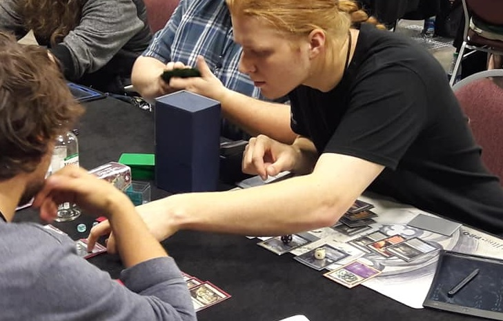

Competitive Magic: the Gathering
I have been a competitive magic player for many years, and have won tournaments of varying levels across the state of Washington, and played in events across the country. I have also qualified for and participated in two pro tours.